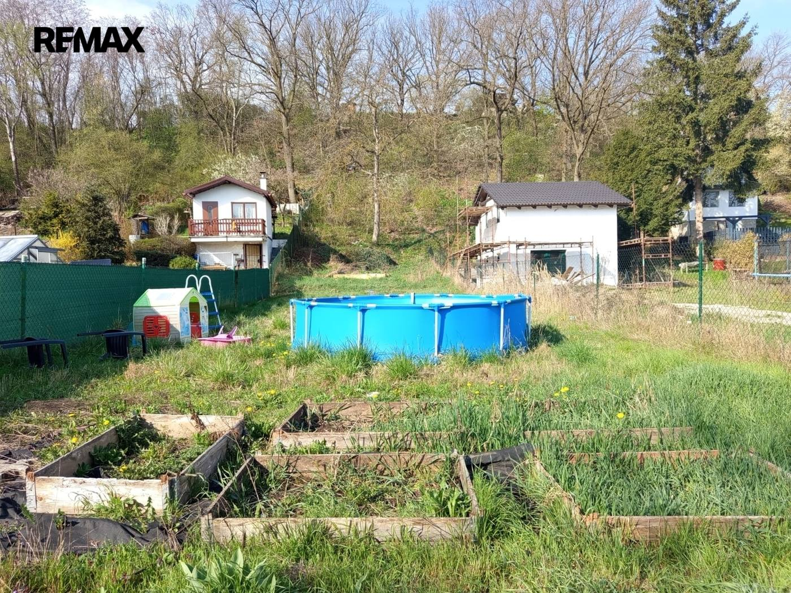
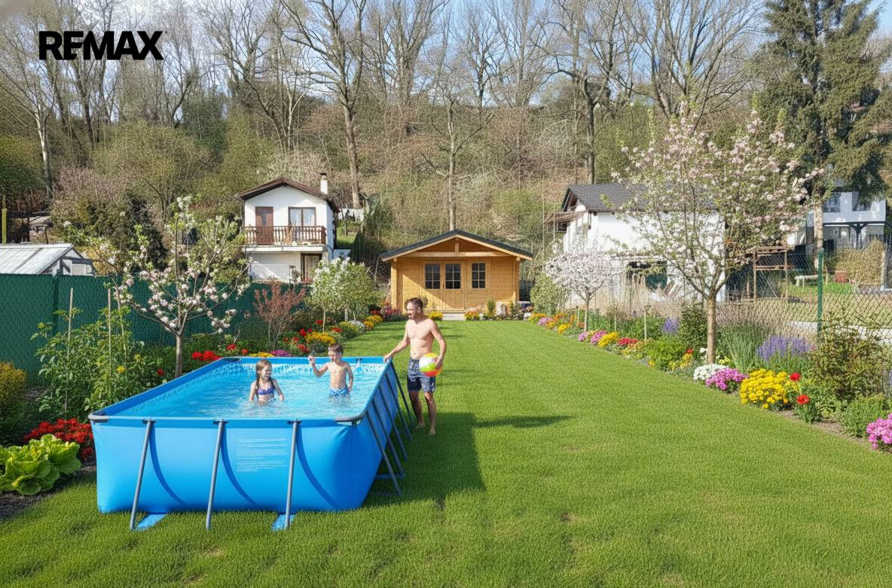
- Plocha607 m²
- Číslo zakázky032-NP09663
Virtuální prohlídka 3D
Přehrávač se načte až po kliknutí.
O nemovitosti
Představte si místo, kde ráno začíná tichem, vzduch voní po vodě a den můžete zakončit u koupaliště jen pár kroků od svého pozemku. Přesně takovou atmosféru nabízí tato zahrada o výměře 607 m² v Žatci.
Pozemek se nachází v jedinečné lokalitě – hned u koupaliště a v blízkosti řeky. Spojuje v sobě klid přírody s možností aktivního odpočinku. Ať už hledáte únik z města, prostor pro víkendové grilování, nebo místo, kde si jednou vytvoříte vlastní zázemí podle svých představ, tady ho najdete.
Zahrada je připravena k okamžitému využití – k dispozici je elektřina i sezónní voda pro pohodlnou údržbu. Díky přístupu po zpevněné cestě se sem dostanete bez omezení kdykoliv během roku.
Velkou výhodou je, že na pozemku nestojí žádná stavba. Máte tak naprostou svobodu vytvořit si prostor přesně podle sebe – od jednoduchého odpočinkového místa až po plnohodnotné zahradní zázemí.
Lokalita vás navíc překvapí svou dostupností. V docházkové vzdálenosti najdete zastávky MHD i autobusů a samotný Žatec nabízí kompletní občanskou vybavenost.
Tohle není jen zahrada. Je to místo pro chvíle klidu, setkání s přáteli, letní večery u vody a únik od každodenního shonu.
Pokud hledáte prostor, který vám dá víc než jen metry čtvereční, právě jste ho našli.
V případě zájmu o prohlídku nás neváhejte kontaktovat na 722521535.
Prodávající si vyhrazuje právo vybrat kupujícího na základě jím zvolených kritérií.
Parametry
- Druh pozemku
- Zahrada
- Celková plocha
- 607 m²
- Inženýrské sítě
- Vodovod, Elektřina
- Typ nemovitosti
- Pozemky
- K nastěhování
- 14. 4. 2026
- Doprava
- Vlak, Silnice, MHD, Autobus
- Elektřina
- 230 V
- Voda
- Zdroj pro celý objekt
Kde to je
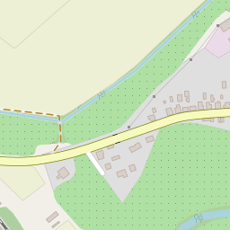
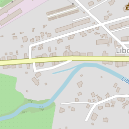
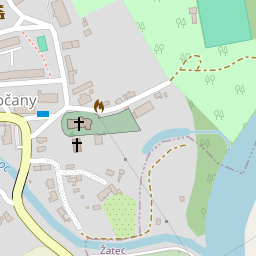
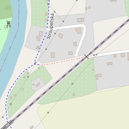
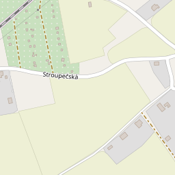
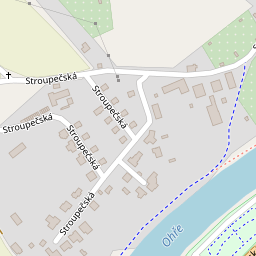
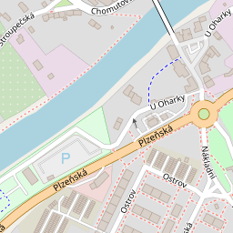
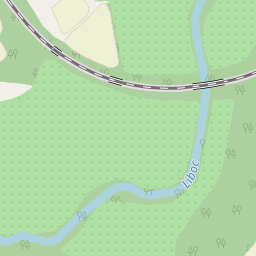
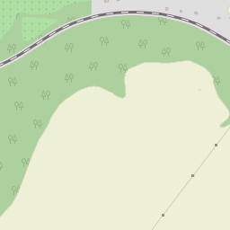
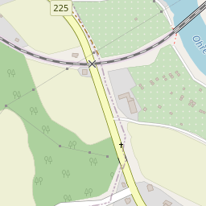
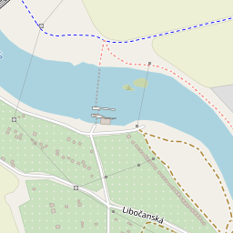
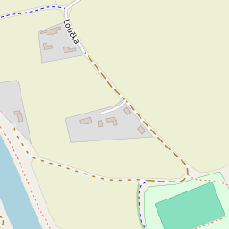
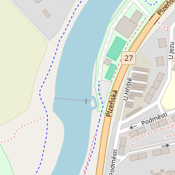
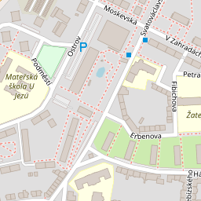
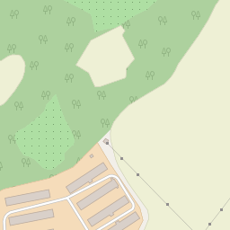
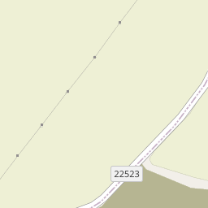
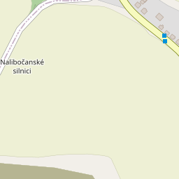
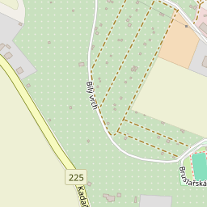
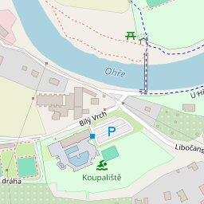
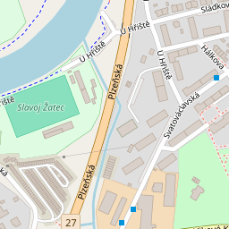
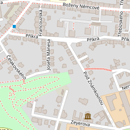
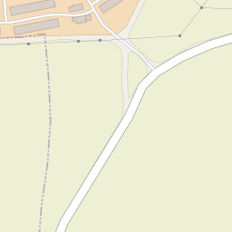
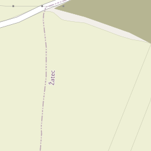
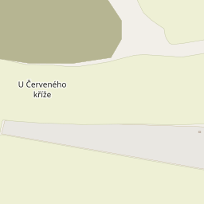
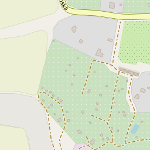
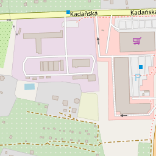
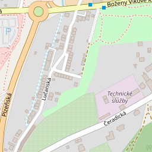
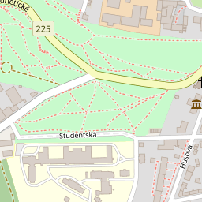
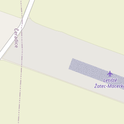
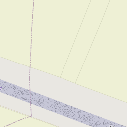

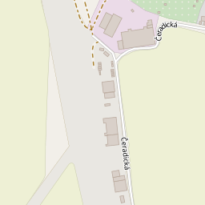
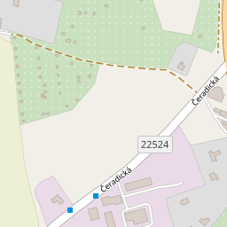
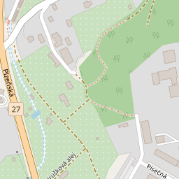
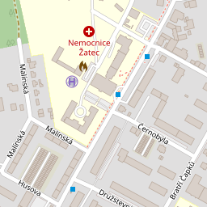
© přispěvatelé OpenStreetMap
Mohlo by Vás zajímat
 Prodej · BytNovéVideo
3 100 000 KčProdej bytu 3+1 v družstevním vlastnictví 81 m², Klášterec nad Ohří
Klášterec nad Ohří
3+181 m²2. podlaží
Prodej · BytNovéVideo
3 100 000 KčProdej bytu 3+1 v družstevním vlastnictví 81 m², Klášterec nad Ohří
Klášterec nad Ohří
3+181 m²2. podlaží
 Prodej · DůmNovéVideo
4 390 000 KčProdej domu 78 m², Měcholupy
Měcholupy
78 m²
Prodej · DůmNovéVideo
4 390 000 KčProdej domu 78 m², Měcholupy
Měcholupy
78 m²
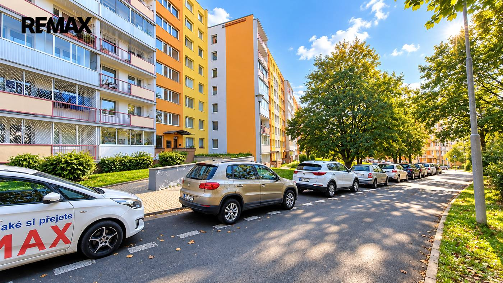
Prodej · BytNovéVideo 2 950 000 KčProdej bytu 3+1 v osobním vlastnictví 69 m², Most Most 3+169 m²1. podlaží